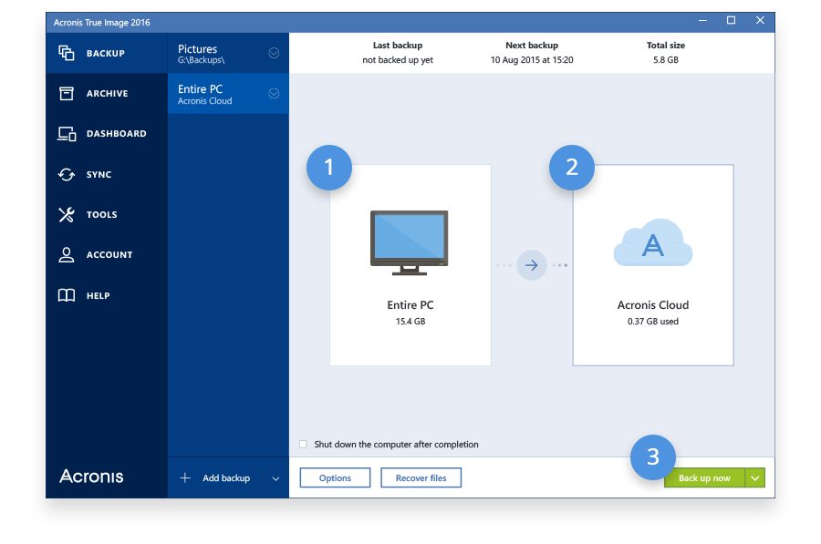
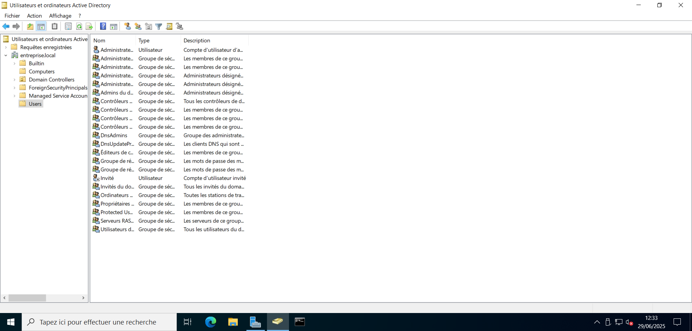
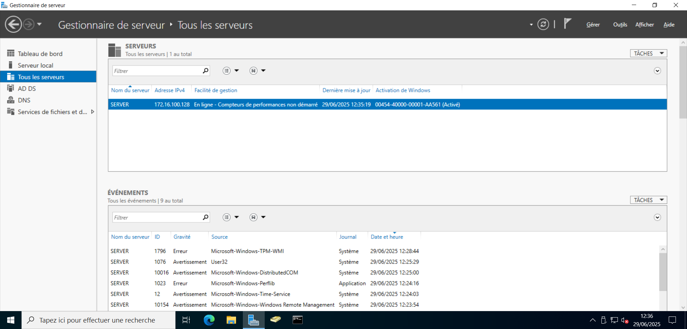

Dossier de Réalisations Professionnelles
Ce portfolio présente les 9 réalisations mobilisant l'ensemble des compétences du bloc "Support et mise à disposition de services informatiques".
📍 Expériences en Entreprise (Suez & Mairie)
Supervision & Continuité de Service
SUEZ / MairieDans l'objectif de vérifier la continuité d'un service informatique, j'ai mis en place une solution de monitoring basée sur Zabbix afin d'assurer le maintien en condition opérationnelle des infrastructures. Cette réalisation a nécessité la configuration de triggers d'alerte et la création de tableaux de bord personnalisés pour anticiper les pannes et exploiter les indicateurs de performance en temps réel.
Gestion du Patrimoine & Inventaire (GLPI)
Mairie du Grau-du-RoiAfin de recenser et d'identifier l'ensemble des ressources numériques de l'organisation, j'ai utilisé l'outil GLPI pour automatiser l'inventaire du parc informatique. Cette mission m'a permis d'exploiter les référentiels et standards adoptés par le prestataire pour assurer une gestion rigoureuse du cycle de vie des actifs matériels et logiciels.
Sauvegardes & Déploiement par Masters
Mairie du Grau-du-RoiPour garantir la sécurité des données et la disponibilité des postes de travail, j'ai pris en charge la gestion des sauvegardes via la solution Acronis. J'ai réalisé des images système (masters) permettant un déploiement industriel et une restauration rapide des environnements utilisateurs en conformité avec le plan de continuité d'activité.


Réponse aux Incidents & Support Utilisateur
Mairie du Grau-du-RoiDans le cadre de l'assistance de proximité, j'ai traité de nombreuses demandes concernant les services réseau et système en utilisant un logiciel de gestion d'incidents. Cette activité impliquait un diagnostic précis des pannes, la résolution technique des tickets de niveau 1 et 2, ainsi qu'une communication claire et adaptée pour accompagner les utilisateurs.

⚙️ Infrastructure, Systèmes & Sécurité
Administration d'un Annuaire AD DS
Afin de mettre en place et de vérifier les niveaux d'habilitation associés aux services, j'ai procédé à l'installation et à la configuration d'un serveur Windows 2022. J'ai structuré l'annuaire Active Directory en créant des unités d'organisation et j'ai déployé des stratégies de groupe (GPO) pour sécuriser les sessions et gérer les droits des utilisateurs


Espace Étudiant - Gestion de Données SQL
Pour répondre à une demande concernant les applications métiers de l'organisation, j'ai participé à l'évolution d'un site web exploitant une base de données SQL[cite: 213, 218]. Ce projet impliquait le développement d'un back-end sécurisé permettant la consultation des notes et l'authentification des étudiants, tout en respectant les normes de développement adoptées par le prestataire.
Audit de Conformité & Veille Souveraine
J'ai mené une analyse juridique et technique approfondie pour garantir le respect des règles d'utilisation des ressources et la protection des données personnelles selon le cadre du RGPD[cite: 210, 216, 253]. Cette mission de veille informationnelle m'a permis de préconiser des solutions souveraines de transcription IA, assurant ainsi la valorisation de l'image de l'organisation et le respect de ses obligations légales.


💻 Développement Web & Gestion de Projet
Gestion de Projet en Mode Agile (Scrum)
En tant que Scrum Master, j'ai facilité l'organisation et la planification des activités d'un projet de groupe en utilisant la méthode Agile. J'ai assuré le suivi du Sprint Backlog via Trello et j'ai évalué les indicateurs de suivi pour analyser les écarts entre les objectifs prévus et les livrables réalisés, garantissant ainsi une communication fluide au sein de l'équipe.


Développement d'Application & Tests Métier
Pour mettre à disposition un nouveau service informatique, j'ai développé une application de calcul métier en C#. J'ai réalisé des tests d'intégration et d'acceptation rigoureux afin de produire un rapport de test et un support d'information garantissant que le service déployé répond parfaitement aux besoins exprimés par les utilisateurs.